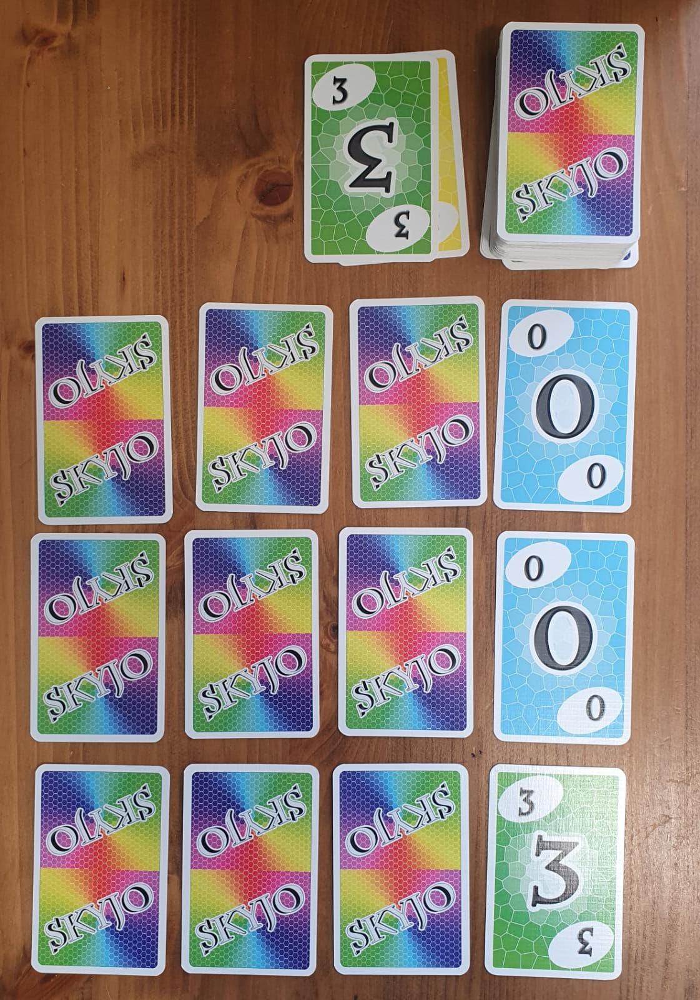
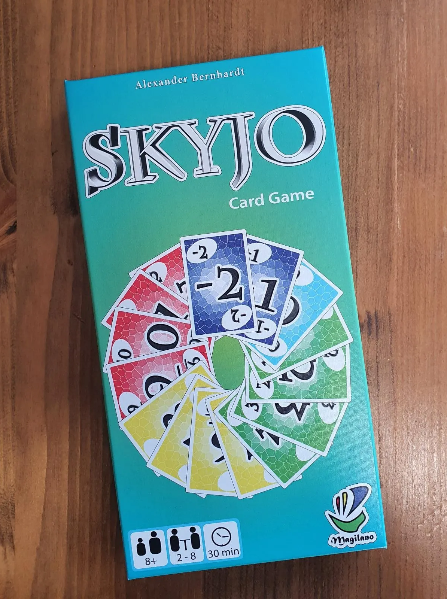
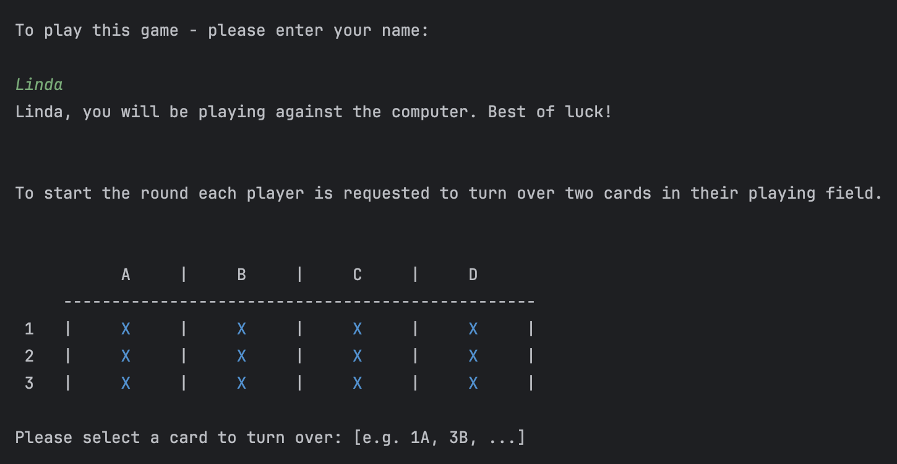
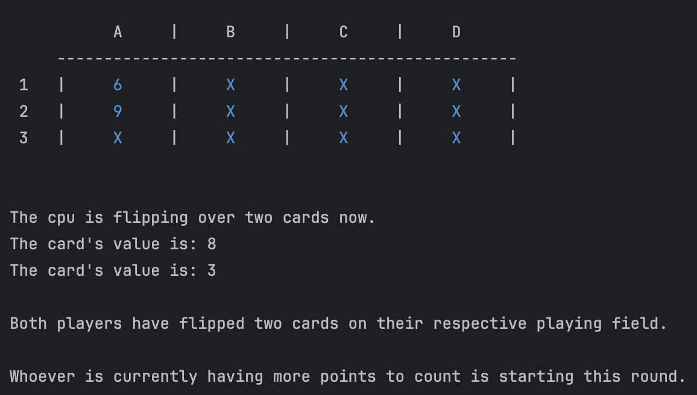
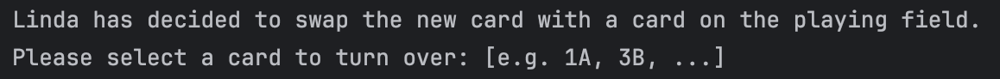
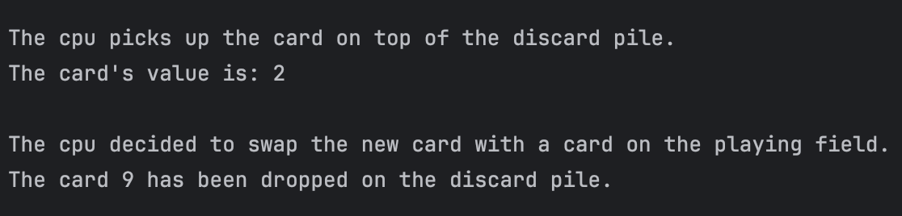

Skyjo.
Building a card game from scratch — in the terminal.
SKYJO.
A human player. A CPU opponent. One terminal.

Overview
Skyjo is a terminal-based card game simulation written in Kotlin.
A human player competes against a CPU opponent through a full game loop — drawing cards, making decisions, managing a playing field, and tracking scores across rounds.
Built entirely without AI assistance as the final submission of a programming fundamentals course at Syntax Institut.
The decision
Follow a predefined RPG structure, or build something entirely my own.
The final project gave two options: build a provided RPG combat system with a predefined structure, or design and build something entirely of my own choosing — as long as it demonstrated branching logic, loops, classes and objects, inheritance, constructors, and functions.
I chose the second option — partly because I love card and board games and wanted to find out if I could translate one into a program, and partly because the RPG felt like filling in a template. It didn't excite me.
Skyjo meant starting from nothing. I had to study and document the actual rules of a real card game, decide how to translate those rules into data structures and logic, figure out what concepts deserved their own class and how many there should be, and find a way to represent a 2D playing field in a terminal environment.
The game
From a physical card game to a playable terminal simulation.
The goal of Skyjo is simple: end the game with as few points as possible. Each player has 12 cards arranged face-down in a 3×4 grid. You can only see the cards you've chosen to reveal — everything else is hidden, including from yourself.


Playing in the terminal
The game opens by asking for your name. Each player then flips two cards of their choice to start.
Whoever has the higher visible score goes first — if it's a tie, a coin toss decides.
On each turn you choose to draw from the draw pile or pick up the top card of the discard pile. You then decide: swap it with any card on your playing field — face-up or face-down — or discard it and flip a hidden card instead.
Every decision is a trade-off between what you know and what you're willing to risk.
Enter the game.
Name your player and reveal the first two cards. The terminal guides the setup one decision at a time.


Twelve cards. Two opponents.
Both 3×4 playing fields are rendered as labelled terminal grids. Hidden cards appear as X; revealed values appear in blue.
Draw. Swap. Reveal.
The player chooses a pile, decides whether to keep or discard the card, and selects a position. The terminal prompts for each decision.

The computer takes its turn.
The CPU makes its own choices and narrates its decisions, making the automated turn understandable to the human player.

Rounds & scoring
If three identical face-up cards line up in a column, that column is eliminated and the cards go to the discard pile — reducing the playing field from 12 cards to 9, 6, or 3.
A round ends when a player has revealed all their cards, or when a player chooses to close the round. After that, the other player gets one final turn. All remaining face-down cards are then revealed and counted.
Scores are tracked on a running scoreboard displayed after each round in yellow. The game ends after the set number of rounds. The winner is announced with their name in green — the loser in red.
The intended round-closing behaviour is not yet fully implemented, as described in the known limitations below.
The code
Before writing code, I mapped out the rules and the concepts the program needed to represent.
The game rules were documented in full, and the class architecture was sketched out — what concepts existed, what data they held, and what they could do.
I then scaffolded the classes with constructors, fields and method signatures before implementing and testing the game function by function in the terminal.
Card
Holds a value and knows how to reveal itself.
PlayingField
Manages the 3×4 grid, column elimination, and rendering.
Player
Prompts the human, validates input, and manages decisions.
ArtificialPlayer
Overrides player actions using random choice logic.
Game
Orchestrates the game session, turns, deck, and scoring.
ScoreBoard
Accumulates and displays scores across rounds.
Player
← extends ←
ArtificialPlayer
Inheritance as a solution
The game can treat a human and the CPU as players without needing separate turn logic.
ArtificialPlayer extends
Player and overrides every action method.
The human version prompts the terminal and validates
input. The CPU version makes a random choice.
Because of this, Game never has to ask
who is playing — it just calls the method and the
appropriate behaviour happens automatically.
Known limitations
Two features have bugs that weren't resolved within the four-week scope.
When a column is eliminated, the index recalculation makes it hard to address the correct card, and the playing field borders don't adjust to the new size correctly. The mechanism exists, but the position mapping becomes inaccurate once the list shrinks.
Voluntary round closing also exists as an interaction, but its consequence is incomplete: remaining face-down cards should be flipped and counted in the final score, but currently only face-up cards are summed.
The CPU plays randomly throughout. There are commented TODOs in the code marking where more sophisticated decision-making logic could be implemented.
Looking back
The code has rough edges, and the project hasn't been touched since. But the architecture held, and that's what mattered at the time.